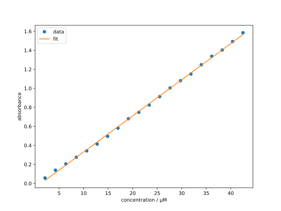
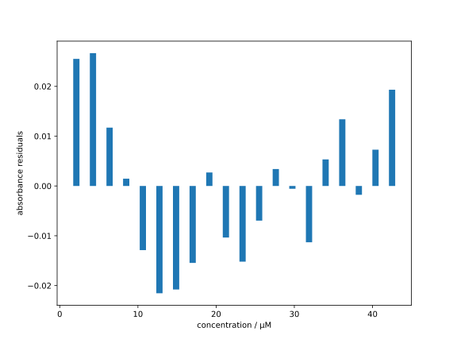

Linear Regression
One of the simplest models in regression analysis is the linear model, where the estimator is given by a linear function of the form with the scalar parameters and . The regression analysis with the linear model is called linear regression.
Theoretical Background
Let us now insert the linear model (cf. Eq. (1.7)) into the least squares loss function according to Eq. (1.3):
Since our goal is to find the parameters that minimize the loss function (cf. Eq. (1.4)), a necessary condition for a minimum is that the partial derivatives of with respect to and must vanish:
After a somewhat tedious but simple calculation, we obtain the following system of equations:
Derivation
First, we calculate the partial derivatives of with respect to and . Since differentiation is linear, we can split the sum in Eq. (1.8) over the individual terms: In the same manner, we proceed with the derivative with respect to and obtain
Setting the derivatives equal to zero gives us the necessary conditions for a minimum: The factor does not matter, since the expression is set to zero. Therefore, we can omit it in the following.
By simply rearranging, we can write the above equations as a linear system of equations in and : Since the parameters and are independent of the data indices , we can factor them out of the sums and obtain where we used . This system of equations is equivalent to the matrix equation in Eq. (1.9).
Solving this system of equations yields the optimal parameters and for the linear model.
The (at least formal) solution of the system of equations (1.9) is , with the inverse of the matrix . A matrix is invertible if and only if its determinant is non-zero. The determinant of the system matrix is where we have introduced the abbreviation for the mean of the .
If we had only one data point (), or if all values were identical (making the variance zero), the determinant would be zero. This means that the matrix is not invertible, and we do not obtain a unique solution for the linear model. A unique solution of the system of equations (1.9) can only be found if there are at least two data points with different values.
Now let’s implement linear regression using real-world data. We’ll use NumPy’s efficient built-in functions to solve the system of linear equations from Eq. (1.9).
Implementation
Consider the following measurement data1 of the Lambert-Beer relationship for methylene blue in water at different concentrations and the corresponding absorbances , measured at with a layer thickness of 1 cm:
| / µM | / µM | ||
|---|---|---|---|
| 2.125 | 0.0572 | 23.38 | 0.8242 |
| 4.250 | 0.1391 | 25.50 | 0.9130 |
| 6.375 | 0.2049 | 27.63 | 1.0043 |
| 8.500 | 0.2754 | 29.75 | 1.0809 |
| 10.63 | 0.3420 | 31.88 | 1.1511 |
| 12.75 | 0.4139 | 34.00 | 1.2483 |
| 14.88 | 0.4956 | 36.13 | 1.3373 |
| 17.00 | 0.5815 | 38.25 | 1.4027 |
| 19.13 | 0.6806 | 40.38 | 1.4927 |
| 21.25 | 0.7481 | 42.50 | 1.5853 |
Before we can proceed, we need to load the data into Python. The easiest way for such a small dataset is to enter it manually.
concentrations = [
2.125, 4.250, 6.375, 8.500, 10.63, 12.75, 14.88, 17.00, 19.13, 21.25,
23.38, 25.50, 27.63, 29.75, 31.88, 34.00, 36.13, 38.25, 40.38, 42.50,
]
absorbances = [
0.0572, 0.1391, 0.2049, 0.2754, 0.3420,
0.4139, 0.4956, 0.5815, 0.6806, 0.7481,
0.8242, 0.9130, 1.0043, 1.0809, 1.1511,
1.2483, 1.3373, 1.4027, 1.4927, 1.5853,
]
Here we have defined the data in the variables concentrations and absorbances using Python Lists. This structure is indicated by the square brackets [] and the commas separating the values. The equal sign = assigns the list to the variable.
While Python lists offer basic functionality, the numpy package provides more powerful operations for numerical data. We’ll import numpy using the common alias np (import numpy as np) to avoid repetitive typing. We then use np.array() to convert the Python lists into NumPy arrays:
import numpy as np
concentrations = np.array(concentrations)
absorbances = np.array(absorbances)
Note the assignment operator (=) in programming differs from mathematical equality. It assigns the result of the right-hand side evaluation to the variable on the left. This allows us to reuse the variable names (concentrations, absorbances) for the new NumPy arrays.
Next, we calculate the components needed for the matrix and vector (Eq. (1.9)), primarily sums involving the concentrations () and absorbances () data. We use np.sum() for summation and check the number of data points, , using len().
# make sure the number of data points is the same
assert len(concentrations) == len(absorbances)
number_of_points = len(concentrations)
sum_x = np.sum(concentrations)
sum_x_sq = np.sum(concentrations**2)
sum_y = np.sum(absorbances)
sum_xy = np.sum(concentrations * absorbances)
We use the built-in function len() to get . np.sum() calculates the sum of array elements. Note that * performs element-wise multiplication between arrays, and ** performs element-wise exponentiation (e.g., concentrations**2 squares each element).
Info for Advanced Learners
The operators * and ** can also be used as unary operators, i.e. operators with only
one argument, contrary to binary operators which require two arguments, such as
multiplication. As a unary operator, they have a different meaning. Interested readers
with some programming experience can read the details, for example, [here](https://book.
pythontips.com/en/latest/args_and_kwargs.html).
We can now assemble the system matrix and the vector from Eq. (1.9):
a_arr = np.array([
[number_of_points, sum_x],
[sum_x, sum_x_sq],
])
b_arr = np.array([sum_y, sum_xy])
Notice that a list of lists is used here to create the matrix (a 2D-array). The inner lists correspond to the rows of the matrix. Now we can finally solve the system of equations (1.9) to obtain the optimal parameters and :
beta = np.linalg.solve(a_arr, b_arr)
print(beta)
The function np.linalg.solve solves a linear system of equations. We then output the solution with the print function.
To verify the implementation, if the expected values for and are known, one can compare them:
beta0 = beta[0]
beta1 = beta[1]
assert np.isclose(beta0, -0.04907034)
assert np.isclose(beta1, 0.03800109)
Here we first indexed the array beta using square brackets []. Remember that indexing in Python starts at 0, so is beta[0] and is beta[1]. Then we compared these values with reference values.
It was not the exact values that were compared with ==, since float numbers (floating point numbers) cannot be represented exactly in general. Therefore, the function np.isclose was used to compare the values with a (in this case preset) tolerance.
The Lambert-Beer law states that the absorbance is linearly dependent on the concentration with the proportionality constant , i.e. The molar extinction coefficient can be calculated from the slope parameter as
Now we have calculated the optimal parameters and for the dataset. How do we assess how well the linear regression fits the data?
There are various quantitative measures of fit quality, which we will explore later. For now, let’s visualize the results graphically to assess the quality visually. This approach might be less rigorous than using mathematical metrics, but it provides valuable intuition.
Visualisation
For visualizing the linear regression results, we will use the Python package matplotlib. We specifically import its pyplot submodule using the common alias plt:
import matplotlib.pyplot as plt
For graphical representation with matplotlib, we typically work with Figure and Axes objects. We can create them together using the function plt.subplots():
fig, ax = plt.subplots(figsize=(8, 6))
Here, the argument figsize=(8, 6) specifies the desired figure size in inches. This size is not fixed and can be freely adjusted.
Now we plot the measurement data as points and the linear regression as a line on the same axes. For this, we use the Axes.plot() method:
ax.plot(concentrations, absorbances, 'o', label='data')
ax.plot(concentrations, beta0 + beta1 * concentrations, label='fit')
We use the format string 'o' to display the measurement data as points (other markers like 's' for squares or 'x' for crosses are available). Without a marker specified, plot draws lines. The label argument in each plot call provides text for the legend.
Note for Advanced Learners
The plot function is actually a method of the Axes class. This means that it is bound to instances of the Axes class. We will learn more about classes and methods in the following chapters. For now, it is sufficient to know that the plot function must be called on instances of the Axes class.
To complete the diagram, we add axis labels and a legend:
ax.set_xlabel('concentration / µM')
ax.set_ylabel('absorbance')
# automatically create a legend
ax.legend()
The functions set_xlabel() and set_ylabel() accept a string argument for the axis label. The legend() method adds a legend, automatically using the label arguments provided in the plot calls.
After adding all elements to the diagram, we display the figure using plt.show():
plt.show()
This diagram shows the results of the linear regression. While the aesthetic design is basic, we will learn more matplotlib features throughout this course to customize plots according to preference.

At first glance, the regression line seems to fit the measurement data very well. To examine the fit more closely, we can plot the residuals (the differences between observed data and the regression line) in a separate diagram.
residuals = absorbances - (beta0 + beta1 * concentrations)
fig2, ax2 = plt.subplots(figsize=(8, 6))
ax2.bar(concentrations, residuals)
ax2.set_xlabel('concentration / µM')
ax2.set_ylabel('absorbance residuals')
plt.show()
After calculating the residuals and storing them in the residuals variable, we create a new figure and axes. We then plot the residuals as a bar chart using the ax.bar() method. The resulting diagram looks like this:

Now it is clearer that the deviations are positive at low and high concentrations, while negative at medium concentrations. This pattern could indicate a slight positive curvature in the data not captured by the linear model. Distinguishing between such systematic patterns and random noise often requires further analysis. Indeed, slight non-linearity exists in this data due to deviations from the Lambert-Beer law, especially at high concentrations. Those interested in the exact explanation for methylene blue in water can consult the cited publication A. Fernández-Pérez, et al. Dyes and Pigments 2019. Whether the linear regression is adequate in this case depends on the required accuracy of the model.
Here we placed the import statements in the respective sections to emphasise the dependencies of the different parts of the script. The resulting code can be interpreted without errors. However, it is common in Python to place the imports at the beginning of the script, i.e.
import numpy as np
import matplotlib.pyplot as plt
# Rest of your code
The authors would like to thank Dr. Hans-Christian Schmitt for providing the lab equipments for the measurements.
Self-Study Questions
-
How does the mathematical form of the -norm loss differ from the -norm loss? Briefly explain why this difference makes (Least Absolute Deviations) less sensitive to outliers than (Least Squares).
-
In the context of minimizing the least squares loss function for linear regression, why do we set the partial derivatives of the loss function with respect to and to zero? What does this step represent in the optimization process?
-
The text mentions that the matrix is invertible if its determinant is non-zero. For the linear regression case, when is the determinant of zero? What does this imply about the data ?
-
Given a Python list of numbers, say
data = [1, 2, 3, 4, 5], write a short Python code snippet (without using NumPy) to calculate the sum of the squares of these numbers.
Challenge Questions
-
Derive the formula for the optimal slope in a linear model without an intercept () using the least squares principle. How does the resulting formula for compare to the one derived for the model with an intercept?
-
Investigate and implement measures of fit quality for linear regression, such as the coefficient of determination , the mean absolute error (MAE), and the root mean squared error (RMSE). How do these metrics relate to the residuals?
-
Linear regression is often used with the least squares loss function because it arises naturally in Maximum Likelihood Estimation (MLE) under the assumption that the residuals are normally distributed with equal variance. MLE finds model parameters that make the observed data most probable given the inputs by maximizing the likelihood function. For the methylene blue data, is it reasonable to assume normally distributed residuals? Explain your reasoning.
Further Reading
- James et al., An Introduction to Statistical Learning, Chapter 3
- Bishop, Pattern Recognition and Machine Learning, Chapter 3.1
- Murphy, Machine Learning: A Probabilistic Perspective, Chapter 7